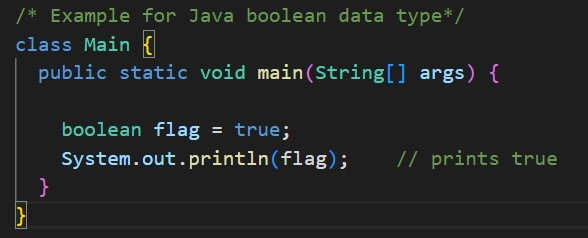
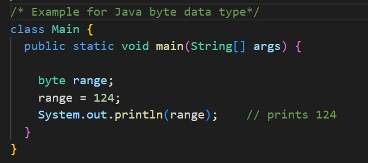
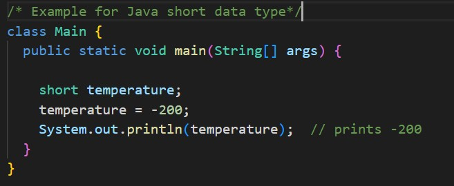
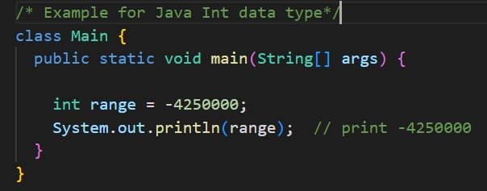
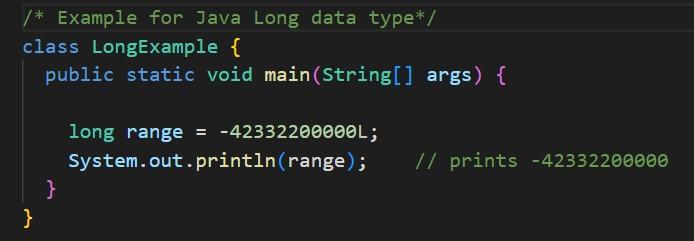
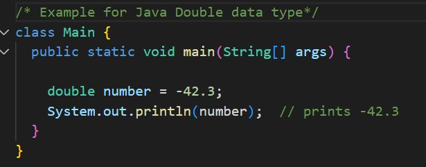
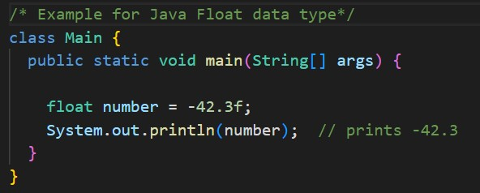
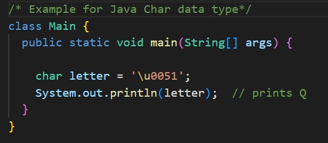
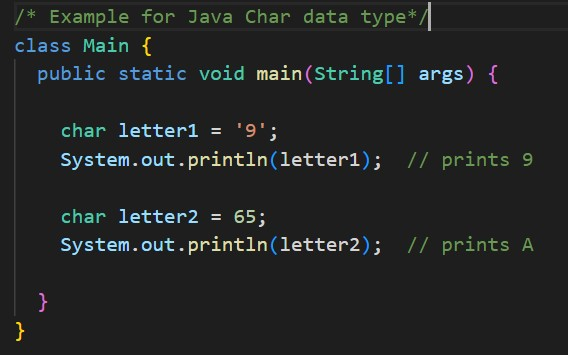

Java Data Types
Java is a statically-typed language. This means that all variables must be declared before they can be used. Data types specify the different sizes and values that can be stored in the variables. There are two types of data types in Java: 1. Primitive Data Type 2. Non-Primitive Data Type 1. Primitive Data Type:- The primitive data types include boolean, char, byte, short, int, long, float and double. Example: int speed; Here, speed is a variable, and the data type of the variable is int. The int data type determines that the speed variable can only contain integers. There are 8 data types predefined in Java, known as primitive data types. Note: In addition to primitive data types, there are also referenced types (object type). 8 Primitive Data Types are - 1. Boolean Type The boolean data type has two possible values, either true or false. Default value: false. They are usually used for true/false conditions.  2. Byte Type The byte data type can have values from -128 to 127 (8-bit signed two's complement integer). If it's certain that the value of a variable will be within -128 to 127, then it is used instead of int to save memory. Default value: 0  3. Short Type The short data type in Java can have values from -32768 to 32767 (16-bit signed two's complement integer). If it's certain that the value of a variable will be within -32768 and 32767, then it is used instead of other integer data types (int, long). Default value: 0.  4. Int Type The int data type can have values from -231 to 231-1 (32-bit signed two's complement integer). If you are using Java 8 or later, you can use an unsigned 32-bit integer. This will have a minimum value of 0 and a maximum value of 232-1. To learn more, visit How to use the unsigned integer in java 8? Default value: 0.  5. Long Type The long data type can have values from -263 to 263-1 (64-bit signed two's complement integer). If you are using Java 8 or later, you can use an unsigned 64-bit integer with a minimum value of 0 and a maximum value of 264-1. Default value: 0.  Notice, the use of L at the end of -42332200000. This represents that it's an integer of the long type. 6. Double Type The double data type is a double-precision 64-bit floating-point. It should never be used for precise values such as currency. Default value: 0.0 (0.0d).  7. Float Type The float data type is a single-precision 32-bit floating-point. Learn more about single-precision and double-precision floating-point if you are interested. It should never be used for precise values such as currency. Default value: 0.0 (0.0f)  Notice that we have used -42.3f instead of -42.3 in the above program. It's because -42.3 is a double literal. To tell the compiler to treat -42.3 as float rather than double, you need to use f or F. 8. Char Type It's a 16-bit Unicode character. The minimum value of the char data type is '\u0000' (0) and the maximum value of the is '\uffff'. Default value: '\u0000'.  Here, the Unicode value of Q is \u0051. Hence, we get Q as the output. Here is another example:  Here, we have assigned 9 as a character (specified by single quotes) to the letter1 variable. However, the letter2 variable is assigned 65 as an integer number (no single quotes). 2. Non-Primitive Data Type:- The non-primitive data types include Classes, Interfaces and Array.